1
Click + New Case
On the Cases page, top right. The New Case form opens.
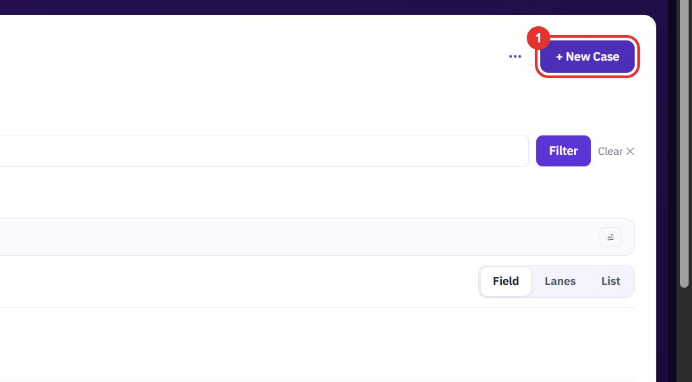
A case is one repair job for one customer and one piece of equipment. Log it, find it, and follow it through six stages from intake to close.
Want the full chapter? Solution Guide, chapter 3: Service (PDF) · All documentation
When a customer reports equipment that needs repair.
On the Cases page, top right. The New Case form opens.

Pick the customer from the Account list. It is required.
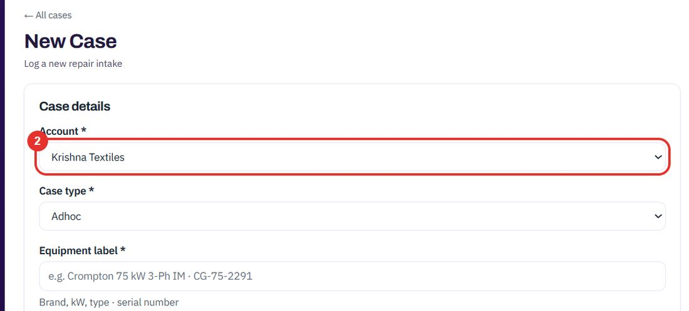
The list offers Adhoc, Direct and AMC (contract).
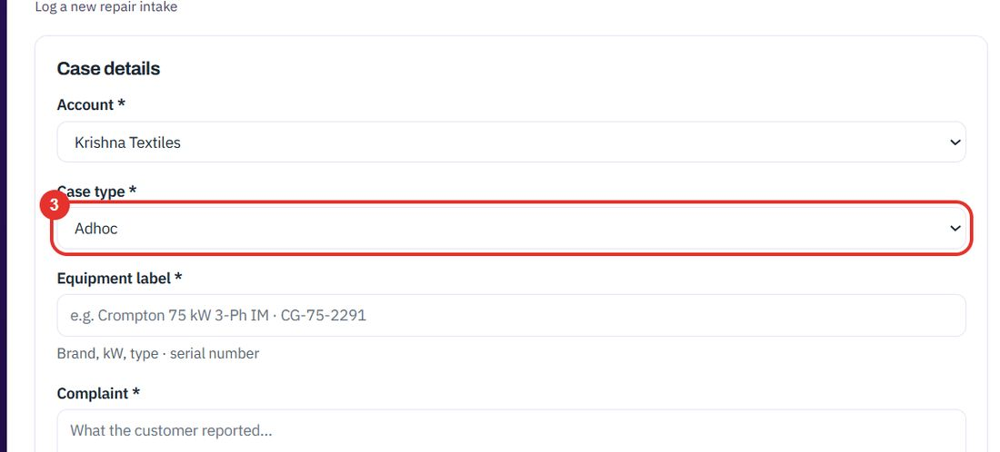
Brand, kW, type and serial number, for example Crompton 75 kW 3-Ph IM · CG-75-2291.
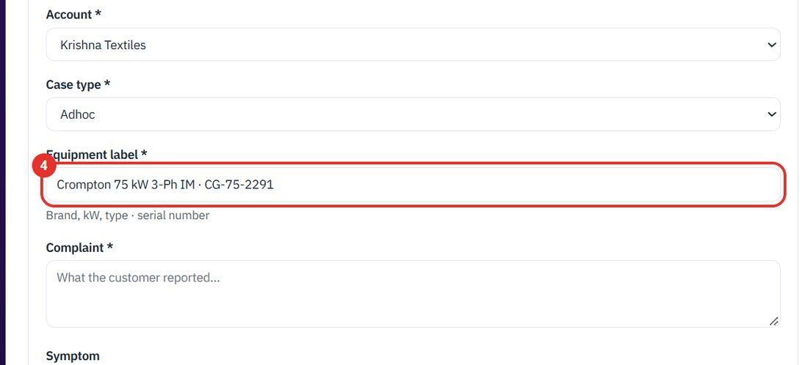
Write what the customer reported. Symptom, just below, is optional.
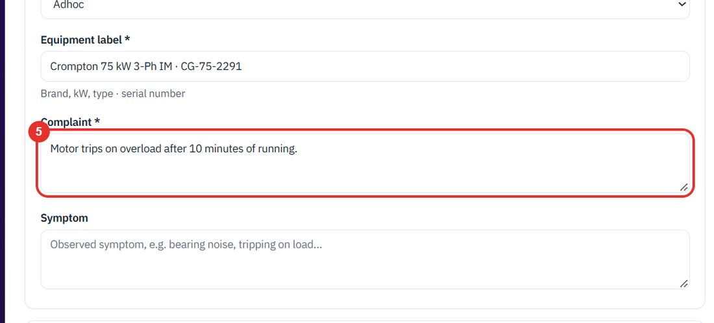
Under Optional, Assets (customer equipment) lists the equipment of the account you chose. Tick the one that applies. It links the case to that asset's history.
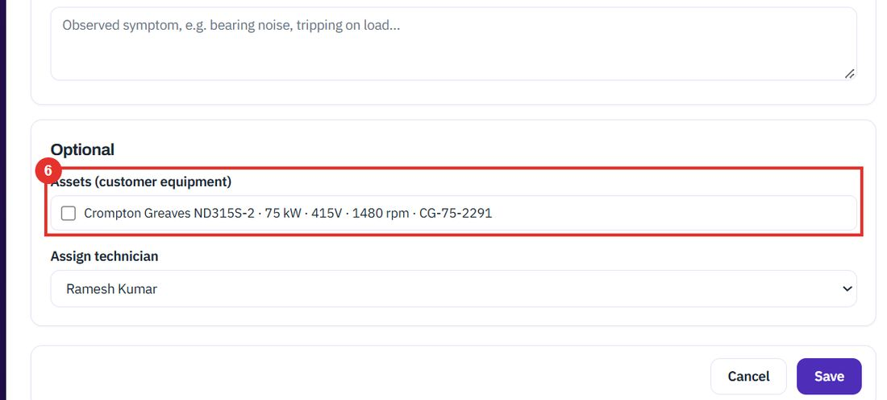
Assign technician is optional. Choose a person, or leave — unassigned —.
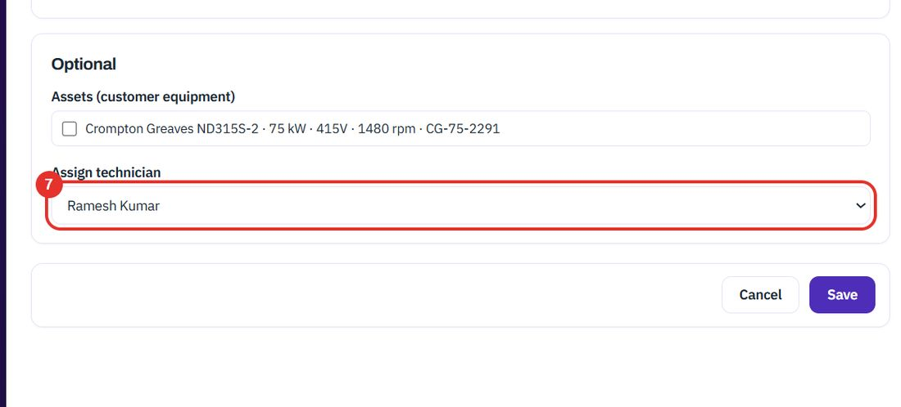
Save creates the case. Cancel, next to it, leaves without saving.
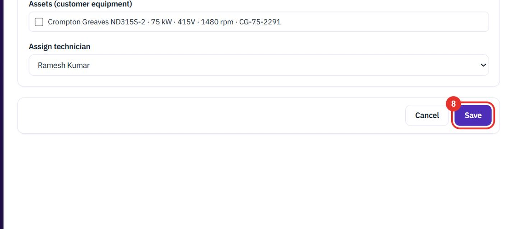
When you need one case among many, or a group of them.
Open, In repair, Awaiting, Closed and All each show one group. The number in brackets is how many cases it holds.
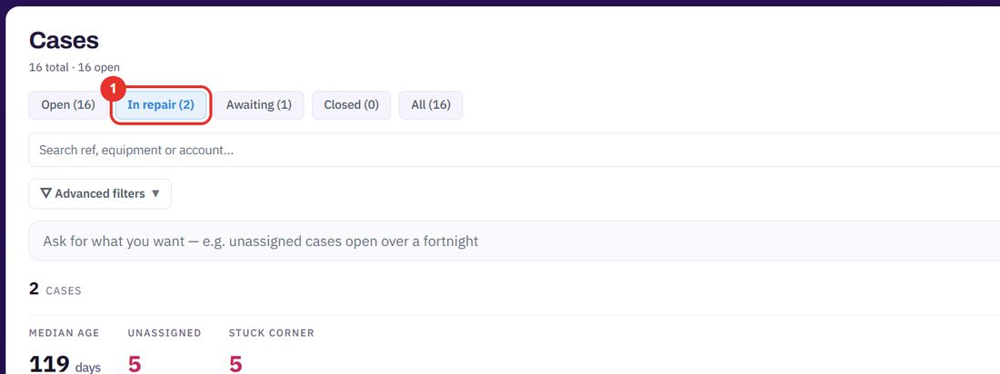
Type a case reference, equipment or account name in the search box, then click Filter.
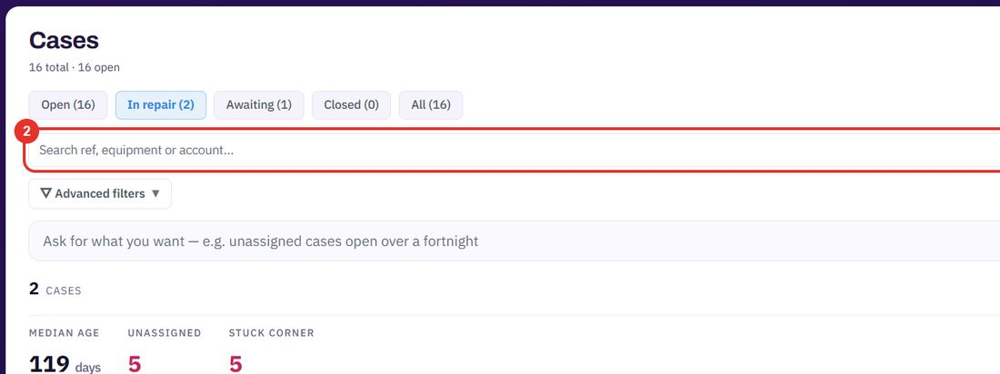
Click Advanced filters under the search box to filter on more fields.
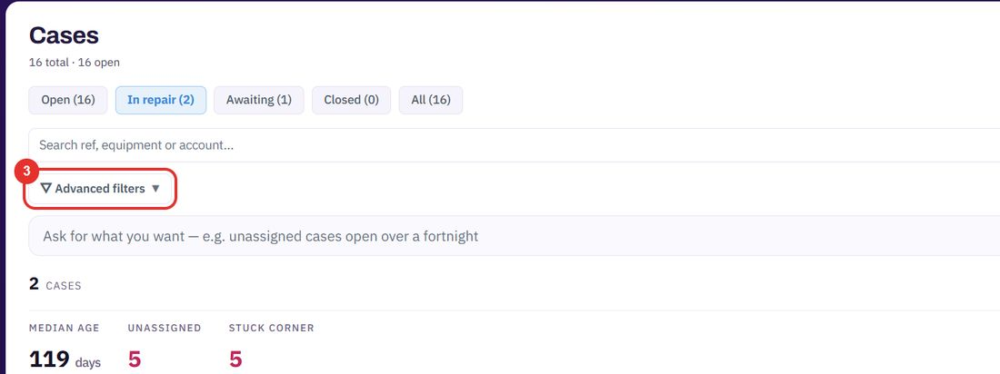
Field, Lanes and List change how the cases are drawn. List shows one row per case with its age, stage and technician.
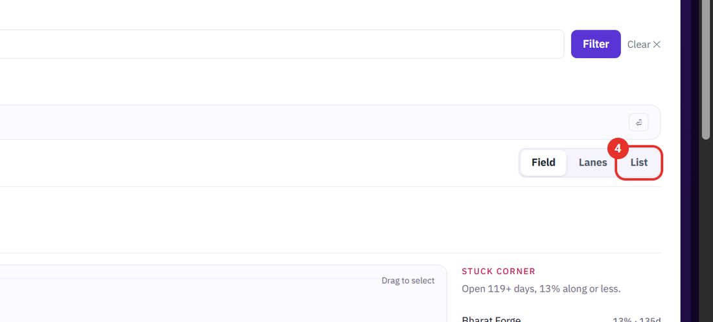
Each row shows the account, the case reference, the age, the stage and the technician. Click the case to open its page.
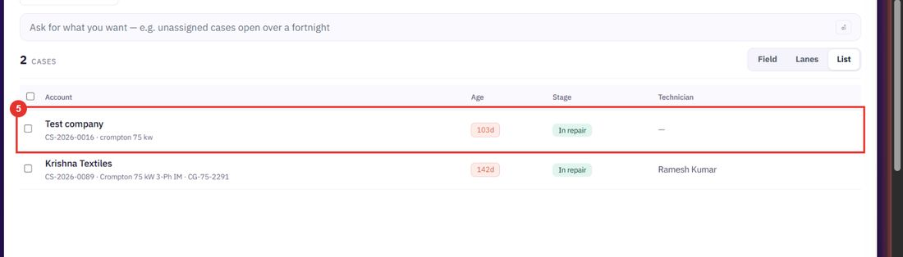
Every case page has the same layout, from intake to close.
The six stages are Intake, Inspection, Report, Quote, Repair and Close. A green tick is done. The blue number is where the case is now.
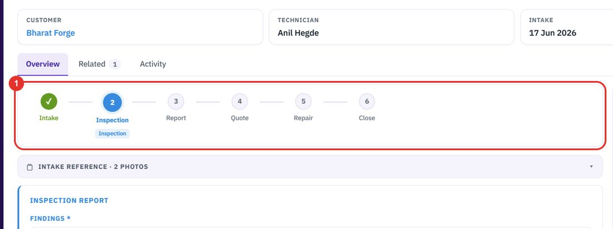
Click the Intake reference bar to open the notes and photos taken when the equipment arrived.
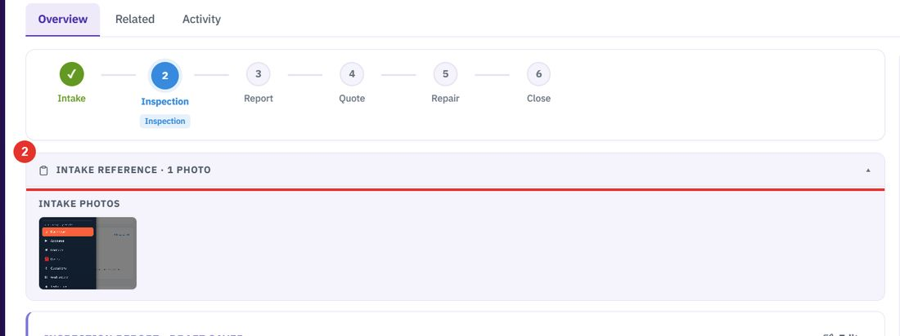
Request quotation asks your suppliers for a price. Their replies come back into this case.
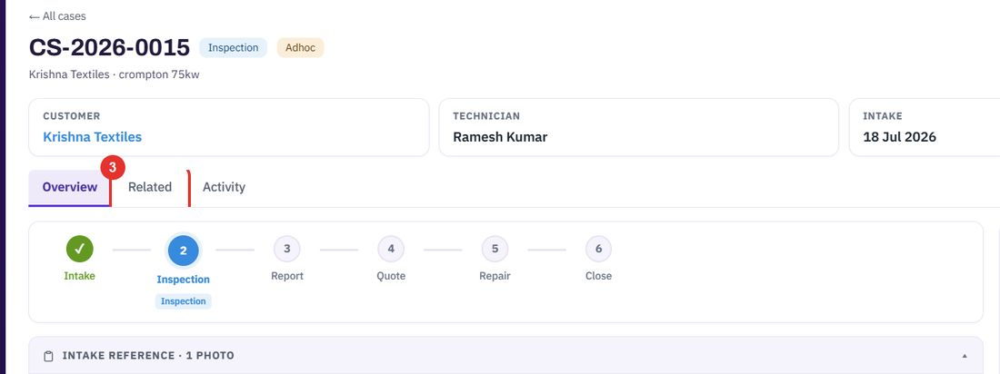
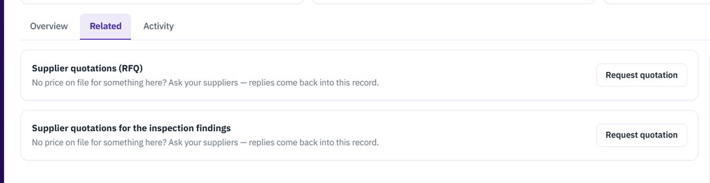
Write a comment, use @ to mention a teammate, and press Ctrl+Enter to post. Comments and every change appear in one stream.
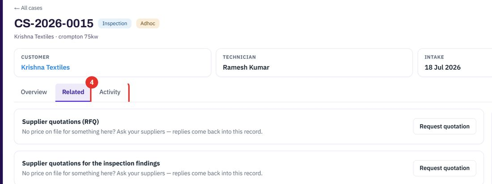
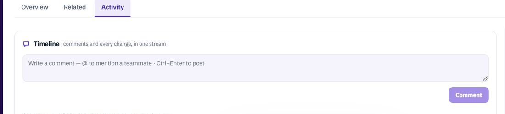
To raise the repair job for a case, see Work orders. To write up what the technician found, see Inspection reports.
Twenty minutes on a live workspace, with your files and your team.